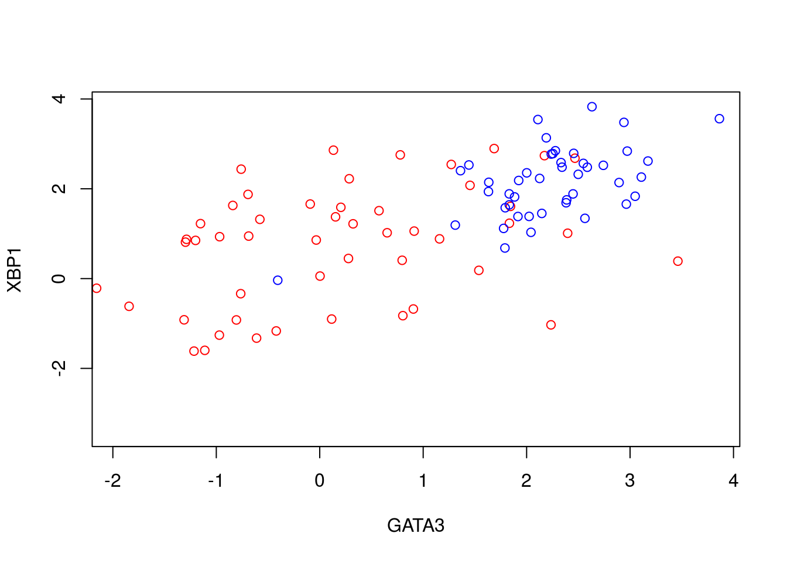
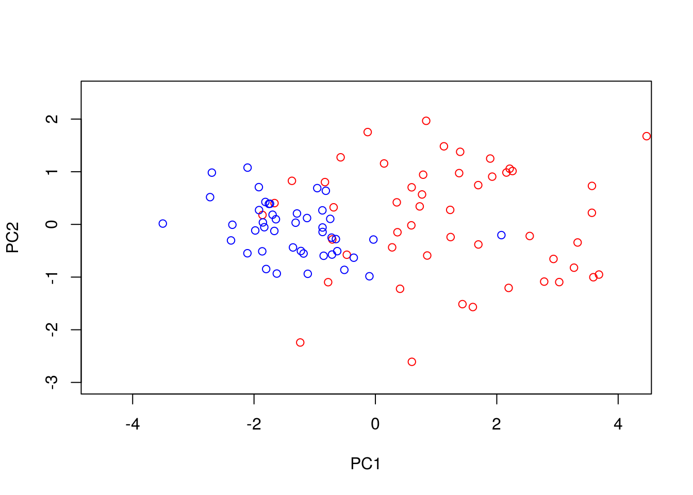
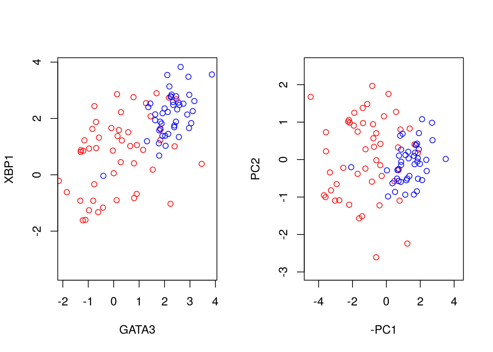
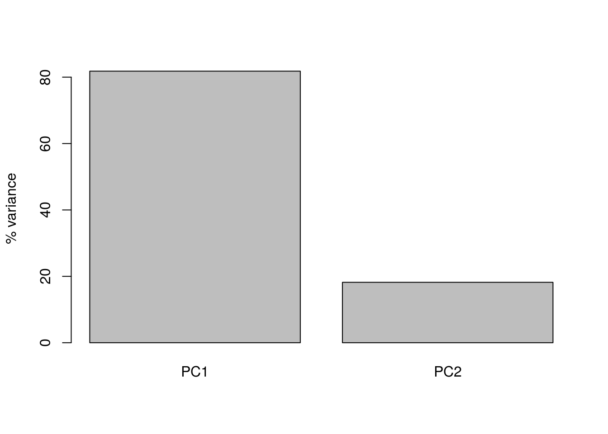
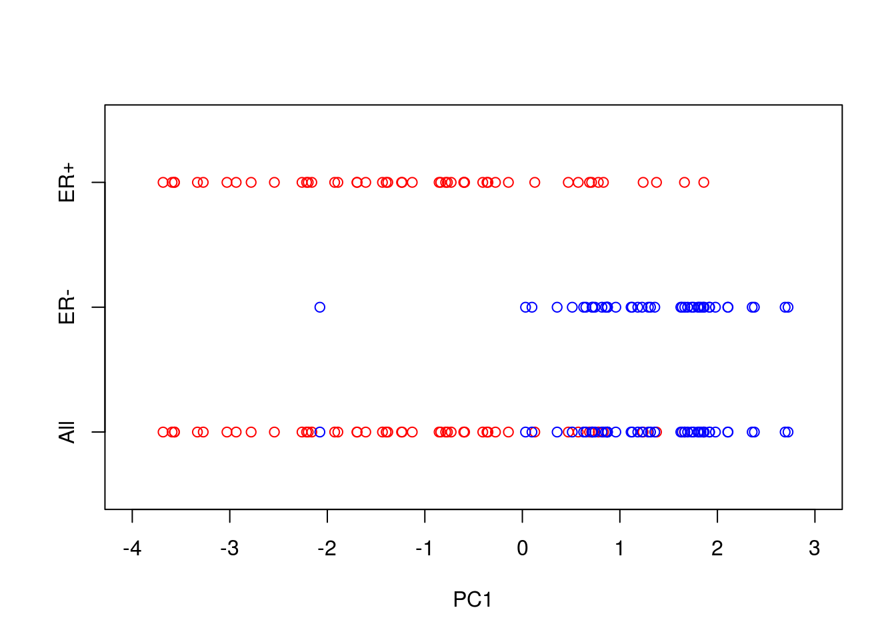
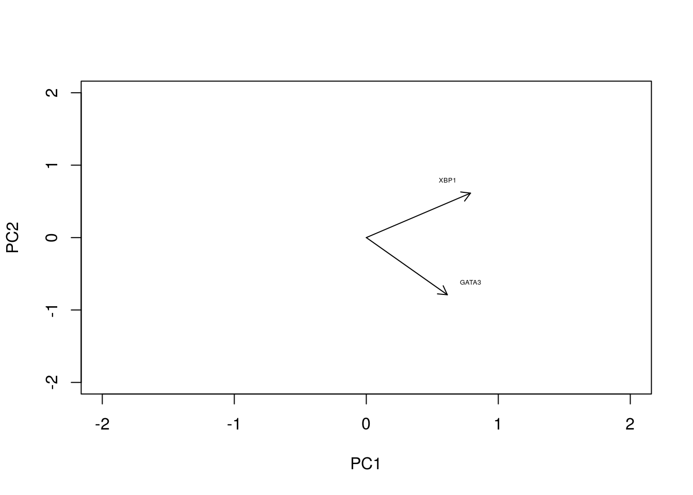
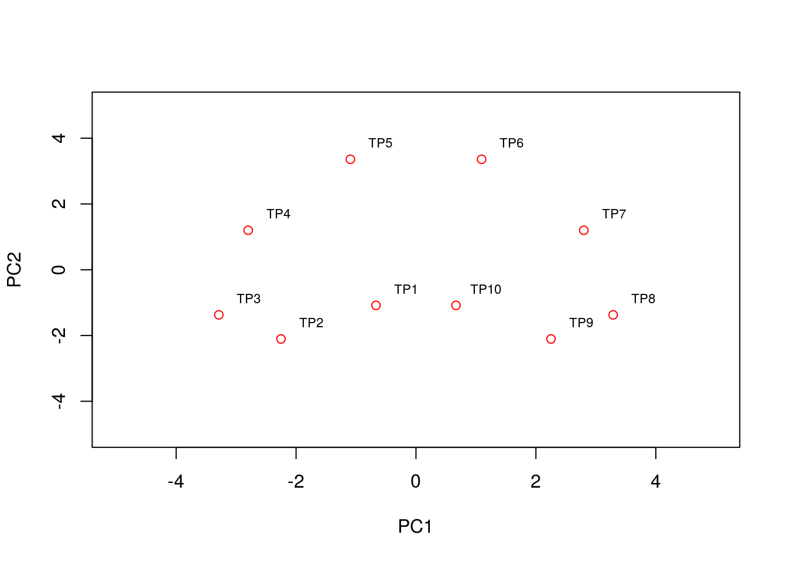
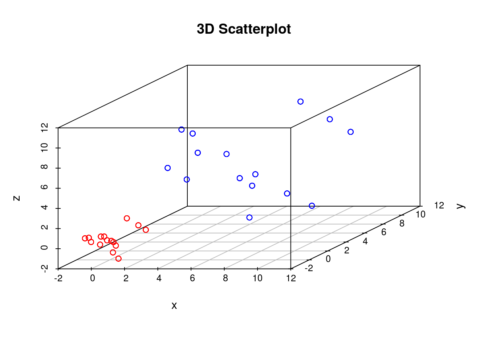
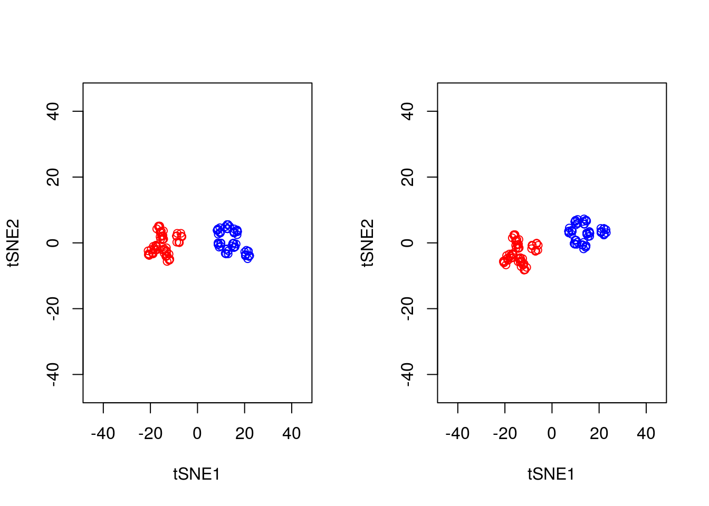

3 Dimensionality reduction
In machine learning, dimensionality reduction refers broadly to any modelling approach that reduces the number of variables in a dataset to a few highly informative or representative ones (see Figure 3.1). This is necessitated by the fact that large datasets with many variables are inherently difficult for humans to develop a clear intuition for. Dimensionality reduction is therefore an integral step in the analysis of large, complex biological datasets, allowing exploratory analyses and more intuitive visualisation that may aid interpretability.

Figure 3.1: Example of a dimensionality reduction. Here we have a two-dimensional dataset embeded in a three-dimensional space (swiss roll dataset).
In biological applications, systems-level measurements are typically used to decipher complex mechanisms. These include measurements of gene expression from collections of microarrays (Breeze et al. 2011,Windram et al. (2012),Lewis et al. (2015),Bechtold et al. (2016)) or RNA-sequencing experiments (Irie et al. 2015,Tang et al. (2015)) that provide quantitative measurments for tens-of-thousands of genes. Studies like these, based on bulk measurements (that is pooled material), provide observations for many variables (in this case many genes) but with relatively few samples e.g., few time points or conditions. The imbalance between the number of variables and the number of observations is referred to as large p, small n, and makes statistical analysis difficult. Dimensionality reduction techniques therefore prove to be a useful first step in any analysis, identifying potential structure that exists in the dataset or highlighting which (combinations of) variables are the most informative.
The increasing prevalence of single cell RNA-sequencing (scRNA-seq) means the scale of datasets has shifted away from large p, small n, towards providing measurements of many variables but with a corresponding large number of observations (large n) albeit from potentially heterogeneous populations. scRNA-sequencing was largely driven by the need to investigate the transcrptomes of cells that were limited in quantity, such as embryonic cells, with early applications in mouse blastomeres (F. Tang et al. 2009). As of 2017, scRNA-seq experiments routinely generate datasets with tens to hundreds-of-thousands of cells (see e.g., (Svensson, Vento-Tormo, and Teichmann 2017)). Indeed, in 2016, the 10x Genomics million cell experiment provided sequencing for over 1.3 million cells taken from the cortex, hippocampus and ventricular zone of embryonic mice, and large international consortiums, such as the Human Cell Atlas aim to create a comprehensive maps of all cell types in the human body. A key goal when dealing with datasets of this magnitude is the identification of subpopulations of cells that may have gone undetected in bulk experiments; another, perhaps more ambitious task, aims to take advantage of any heterogeneity within the population in order to identify a temporal or mechanistic progression of developmental processes or disease.
Of course, whilst dimensionality reduction allows humans to inspect the dataset manually, particularly when the data can be represented in two or three dimensions, we should keep in mind that humans are exceptionally good at identifying patterns in two or three dimensional data, even when no real structure exists (Figure 3.2. It is therefore useful to employ other statistical approaches to search for patterns in the reduced dimensional space. In this sense, dimensionality reduction forms an integral component in the analysis of complex datasets that will typically be combined a variety of machine learning techniques, such as classification, regression, and clustering.
](images/GB1.jpg)
Figure 3.2: Humans are exceptionally good at identifying patterns in two and three-dimensional spaces - sometimes too good. To illustrate this, note the Great Britain shapped cloud in the image (presumably drifting away from an EU shaped cloud, not shown). More whimsical shaped clouds can also be seen if you have a spare afternoon. Golcar Matt/Weatherwatchers BBC News
In this chapter we will explore two forms of dimensionality reduction: principle component analysis (PCA) and t-distributed stochastic neighbour embedding (tSNE), highlighting the advantages and potential pitfalls of each method. As an illustrative example, we will use these approaches to analyse single cell RNA-sequencing data of early human development. Finally, we will illustrate the use of dimensionality redution on an image dataset.
3.1 Linear Dimensionality Reduction
The most widely used form of dimensionality reduction is principle component analysis (PCA), which was introduced by Pearson in the early 1900’s (Pearson 1901), and independently rediscovered by Hotelling (Hotelling 1933). PCA has a long history of use in biological and ecological applications, with early use in population studies (Sforza and Edwards 1964), and later for the analysis of gene expression data (Vohradsky, Li, and Thompson 1997,Craig et al. (1997),Hilsenbeck et al. (1999)).
PCA is not a dimensionality reduction technique per se, but an alternative way of representing the data that more naturally captures the variance in the system. Specifically, it finds a new co-ordinate system, so that the new “x-axis” (which is called the first principle component; PC1) is aligned along the direction of greatest variance, with an orthogonal “y-axis” aligned along the direction with second greatest variance (the second principle component; PC2), and so forth. At this stage there has been no inherent reduction in the dimensionality of the system, we have simply rotated the data around.
To illustrate PCA we can repeat the analysis of (Ringnér 2008) using the dataset of (Saal et al. 2007) (GEO GSE5325). This dataset contains gene expression profiles for \(105\) breast tumour samples measured using Swegene Human 27K RAP UniGene188 arrays. Within the population of cells, (Ringnér 2008) focused on the expression of GATA3 and XBP1, whose expression was known to correlate with estrogen receptor status [^](Breast cancer cells may be estrogen receptor positive, ER\(^+\), or negative, ER\(^-\), indicating capacity to respond to estrogen signalling, which has impliations for treatment), representing a two dimensional system. A pre-processed dataset containing the expression levels for GATA3 and XBP1, and ER status, can be loaded into R using the code, below:
D <- read.csv(file = "data/GSE5325/GSE5325_markers.csv", header = TRUE, sep = ",", row.names=1)We therefore have a two dimensional system and can now plot the expression levels of GATA3 and XBP1 (rows 1 and 2) against one another to visualise the data in the two-dimensional space:
plot(t(D[1,which(D[3,]==0)]),t(D[2,which(D[3,]==0)]),'p',col='red', ylab="XBP1", xlab="GATA3",xlim=c(min(D[2,],na.rm = TRUE), max(D[2,],na.rm = TRUE)),ylim=c(min(D[1,],na.rm = TRUE), max(D[1,],na.rm = TRUE)))
points(t(D[1,which(D[3,]==1)]),t(D[2,which(D[3,]==1)]),'p',col='blue')
We can perform PCA in R using the function. To do so, we must first filter out datapoints that have missing observations, as PCA does not, inherently, deal with missing observations:
Dommitsamps <- t(na.omit(t(D[,]))); #Get the subset of samples
pca1 <- prcomp(t(Dommitsamps[1:2,]), center = TRUE, scale=FALSE)
ERexp <- Dommitsamps[3,];
ER_neg <- pca1$x[which(ERexp==0),]
ER_pos <- pca1$x[which(ERexp==1),]
plot(ER_neg[,1],ER_neg[,2],'p',col='red', xlab="PC1", ylab="PC2",xlim=c(-4.5, 4.2),ylim=c(-3, 2.5))
points(ER_pos[,1],ER_pos[,2],'p',col='blue')
Note that the has the option to centre and scale the data. That is, to normalise each variable to have a zero-mean and unit variance. This is particularly important when dealing with variables that may exist over very different scales. For example, for ecological datasets we may have variables that were measured in seconds with others measured in hours. Without normalisation there would appear to be much greater variance in the variable measured in seconds, potentially skewing the results. In general, when dealing with variables that are measured on similar scales (for example gene expression) it is not desirable to normalise the data.
We can better visualise what the PCA has done by plotting the original data side-by-side with the transformed data (note that here we have plotted the negative of PC1).
par(mfrow=c(1,2))
plot(t(D[1,which(D[3,]==0)]),t(D[2,which(D[3,]==0)]),'p',col='red', ylab="XBP1", xlab="GATA3",xlim=c(min(D[2,],na.rm = TRUE), max(D[2,],na.rm = TRUE)),ylim=c(min(D[1,],na.rm = TRUE), max(D[1,],na.rm = TRUE)))
points(t(D[1,which(D[3,]==1)]),t(D[2,which(D[3,]==1)]),'p',col='blue')
plot(-ER_neg[,1],ER_neg[,2],'p',col='red', xlab="-PC1", ylab="PC2",xlim=c(-4.5, 4.2),ylim=c(-3, 2.5))
points(-ER_pos[,1],ER_pos[,2],'p',col='blue')
We can seen that we have simply rotated the original data, so that the greatest variance aligns along the x-axis and so forth. We can find out how much of the variance each of the principle components explains by looking at variable:
par(mfrow=c(1,1))
barplot(((pca1$sdev)^2 / sum(pca1$sdev^2))*100, names.arg=c("PC1","PC2"), ylab="% variance")
Here we can see that PC1 explains the vast majority of the variance in the observations (for this example we should be able to see this by eye). The dimensionality reduction step of PCA occurs when we choose to discard the later PCs. Of course, by doing so we loose some information about the system, but this may be an acceptable loss compared to the increased interpretability achieved by visualising the system in lower dimensions. In the example below, we follow from (Ringnér 2008), and visualise the data using only PC1.
par(mfrow=c(1,1))
plot(-ER_neg[,1],matrix(-1, 1, length(ER_neg[,1])),'p',col='red', xlab="PC1",xlim=c(-4, 3),ylim=c(-1.5,1.5),yaxt="n", ylab="")
points(-ER_pos[,1],matrix(-1, 1, length(ER_pos[,1])),'p',col='blue')
points(-ER_neg[,1],matrix(1, 1, length(ER_neg[,1])),'p',col='red', xlab="PC1",xlim=c(-4, 3))
points(-ER_pos[,1],matrix(0, 1, length(ER_pos[,1])),'p',col='blue')
axis(side = 2, at = seq(-1, 1, by = 1), labels = c("All","ER-","ER+"))
So reducing the system down to one dimension appears to have done a good job at separating out the ER\(^+\) cells from the ER\(^-\) cells, suggesting that it may be of biological use. Precisely how many PCs to retain remains subjective. For visualisation purposed, it is typical to look at the first two or three only. However, when using PCA as an intermediate step within more complex workflows, more PCs are often retained e.g., by thresholding to a suitable level of explanatory variance.
3.1.1 Interpreting the Principle Component Axes
In the original data, the individual axes had very obvious interpretations: the x-axis represented expression levels of GATA3 and the y-axis represented the expression level of XBP1. Other than indicating maximum variance, what does PC1 mean? The individual axes represent linear combinations of the expression of various genes. This may not be immediately intuitive, but we can get a feel by projecting the original axes (gene expression) onto the (reduced dimensional) co-ordinate system.
genenames <- c("GATA3","XBP1")
plot(-pca1$rotation[,1],pca1$rotation[,2], type="n", xlim=c(-2, 2), ylim=c(-2, 2), xlab="PC1", ylab="PC2")
text(-pca1$rotation[,1], pca1$rotation[,2], genenames, cex = .4)
arrows(0, 0, x1 = -pca1$rotation[,1], y1 = -pca1$rotation[,2],length=0.1)
In this particular case, we can see that both genes appear to be reasonably strongly associated with PC1. When dealing with much larger systems e.g., with more genes, we can, of course, project the original axes into the reduced dimensional space. In general this is particularly useful for identifying genes associated with particular PCs, and ultimately assigning a biological interpretation to the PCs.
3.1.2 Horseshoe effect
Principle component analysis is a linear dimensionality reduction technique, and is not always appropriate for complex datasets, particularly when dealing with nonlinearities. To illustrate this, let’s consider an simulated expression set containing \(8\) genes, with \(10\) timepoints/conditions. We can represent this dataset in terms of a matrix:
X <- matrix( c(2,4,2,0,0,0,0,0,0,0,
0,2,4,2,0,0,0,0,0,0,
0,0,2,4,2,0,0,0,0,0,
0,0,0,2,4,2,0,0,0,0,
0,0,0,0,2,4,2,0,0,0,
0,0,0,0,0,2,4,2,0,0,
0,0,0,0,0,0,2,4,2,0,
0,0,0,0,0,0,0,2,4,2), nrow=8, ncol=10, byrow = TRUE)Or we can visualise by plotting a few of the genes:
plot(1:10,X[1,],type="l",col="red",xlim=c(0, 14),xlab="Time",ylab="Expression")
points(1:10,X[2,],type="l",col="blue")
points(1:10,X[5,],type="l",col="black")
legend(8, 4, legend=c("gene 1", "gene 2", "gene 5"), col=c("red", "blue", "black"),lty=1, cex=0.8)
By eye, we see that the data can be separated out by a single direction: that is, we can order the data from time/condition 1 through to time/condition 10. Intuitively, then, the data can be represented by a single dimension. Let’s run PCA as we would normally, and visualise the result, plotting the first two PCs:
pca2 <- prcomp(t(X),center = TRUE,scale=FALSE)
condnames = c('TP1','TP2','TP3','TP4','TP5','TP6','TP7','TP8','TP9','TP10')
plot(pca2$x[,1:2],type="p",col="red",xlim=c(-5, 5),ylim=c(-5, 5))
text(pca2$x[,1:2]+0.5, condnames, cex = 0.7)
We see that the PCA plot has placed the datapoints in a horseshoe shape, with condition/time point 1 very close to condition/time point 10. From the earlier plots of gene expression profiles we can see that the relationships between the various genes are not entirely straightforward. For example, gene 1 is initially correlated with gene 2, then negatively correlated, and finally uncorrelated, whilst no correlation exists between gene 1 and genes 5 - 8. These nonlinearities make it difficult for PCA which, in general, attempts to preserve large pairwise distances, leading to the well known horseshoe effect (Novembre and Stephens 2008,Reich, Price, and Patterson (2008)). These types of artefacts may be problematic when trying to interpret data, and due care must be given when these type of effects are seen.
3.1.3 PCA analysis of mammalian development
Now that we have a feel for PCA and understand some of the basic commands we can apply it in a real setting. Here we will make use of preprocessed data taken from (L. Yan et al. 2013) (GEO GSE36552) and (F. Guo et al. 2015) (GEO GSE63818). The data from (L. Yan et al. 2013) represents single cell RNA-seq measurements from human embryos from the zygote stage (a single cell produced following fertilisation of an egg) through to the blastocyst stage (an embryo consisting of around 64 cells), as well as human embryonic stem cells (hESC; cells extracted from an early blsatocyst stage embryo and maintained in vitro). The dataset of (F. Guo et al. 2015) contains scRNA-seq data from human primordial germ cells (hPGCs), precursors of sperm or eggs that are specified early in the developing human embryo soon after implantation (around week 2-3 in humans), and somatic cells. Together, these datasets provide useful insights into early human development, and possible mechanisms for the specification of early cell types, such as PGCs.
Figure 3.3: Example of early human development. Here we have measurements of cells from preimplantation embryos, embryonic stem cells, and from post-implantation primordial germ cells and somatic tissues.
Preprocessed data contains \(\log_2\) normalised counts for around \(400\) cells using \(2957\) marker genes can be found in the file . Note that the first line of data in the file is an indicator denoting cell type (-1 = ESC, 0 = pre-implantation, 1 = PGC, and 2 = somatic cell). The second row indicates the sex of the cell (0 = unknown/unlabelled, 1 = XX, 2 = XY), with the third row indicating capture time (-1 = ESC, 0 - 7 denotes various developmental stages from zygote to blastocyst, 8 - 13 indicates increasing times of embryo development from week 4 through to week 19).
We first load in this dataset using {read.csv}
set.seed(12345)
D <- read.csv(file = "data/PGC_transcriptomics/PGC_transcriptomics.csv", header = TRUE, sep = ",", row.names=1)
genenames <- rownames(D)
genenames <- genenames[4:nrow(D)]Exercise 2.1. Use to perform PCA on the data. Hint: use {prcomp}, rembering to transpose the that dataset. Centre, but do not scale the data.
Exercise 2.2. Try plotting visualising the original axis. Can we identify any genes of interest that may be particularly important for PGCs?
Exercise 2.3. Does the data separate well? Perform k-means cluster analysis on the data to see if we can identify distinct clusters.
Exercise 2.4. Perform a differential expression analysis between blastocyst cells and the PGCs.
3.2 Nonlinear Dimensionality Reduction
Whilst PCA is extremely useful for exploratory analysis, it is not always appropriate, particularly for datasets with nonlinearities. A large number of nonlinear dimensionality reduction techniques have therefore been developed. Perhaps the most commonly applied technique is t-distributed stochastic neighbour embedding (tSNE) (L. van der Maaten and Hinton 2008,L. van der Maaten (2009),Van der Maaten and Hinton (2012),Van Der Maaten (2014)).
In general, tSNE attempts to take points in a high-dimensional space and find a faithful representation of those points in a lower-dimensional space. The SNE algorithm initially converts the high-dimensional Euclidean distances between datapoints into conditional probabilities. Here \(p_{j|i}\), indicates the probability that datapoint \(x_i\) would pick \(x_j\) as its neighbour if neighbours were picked in proportion to their probability density under a Gaussian centred at \(x_i\):
\(p_{j|i} = \frac{\exp(-|\mathbf{x}_i - \mathbf{x}_j|^2/2\sigma_i^2)}{\sum_{k\neq l}\exp(-|\mathbf{x}_k - \mathbf{x}_l|^2/2\sigma_i^2)}\)
We can define a similar conditional probability for the datapoints in the reduced dimensional space, \(y_j\) and \(y_j\) as:
\(q_{j|i} = \frac{\exp(-|\mathbf{y}_i - \mathbf{y}_j|^2)}{\sum_{k\neq l}\exp(-|\mathbf{y}_k - \mathbf{y}_l|^2)}\).
Natural extensions to this would instead use a Student-t distribution for the lower dimensional space:
\(q_{j|i} = \frac{(1+|\mathbf{y}_i - \mathbf{y}_j|^2)^{-1}}{\sum_{k\neq l}(1+|\mathbf{y}_i - \mathbf{y}_j|^2)^{-1}}\).
If SNE has mapped points \(\mathbf{y}_i\) and \(\mathbf{y}_j\) faithfully, we have \(p_{j|i} = q_{j|i}\). We can define a similarity measure over these distribution based on the Kullback-Leibler-divergence:
\(C = \sum KL(P_i||Q_i)= \sum_i \sum_j p_{i|j} \log \biggl{(} \frac{p_{i|j}}{q_{i|j}} \biggr{)}\)
If \(p_{j|i} = q_{j|i}\), that is, if our reduced dimensionality representation faithfully captures the higher dimensional data, this value will be equal to zero, otherwise it will be a positive number. We can attempt to minimise this value using gradient descent.
Note that in many cases this lower dimensionality space can be initialised using PCA or other dimensionality reduction technique. The tSNE algorithm is implemented in R via the package.
library(Rtsne)
library(scatterplot3d)
set.seed(12345)To get a feel for tSNE we will first generate some artificial data. In this case we generate two different groups that exist in a 3-dimensional space. We choose these groups to be Gaussian distributed, with different means and variances:
D1 <- matrix( rnorm(5*3,mean=0,sd=1), 100, 3)
D2 <- matrix( rnorm(5*3,mean=5,sd=3), 100, 3)
G1 <- matrix( 1, 100, 1)
G2 <- matrix( 2, 100, 1)
D3 <- rbind(D1,D2)
G3 <- rbind(G1,G2)
colors <- c("red", "blue")
colors <- colors[G3]
scatterplot3d(D3,color=colors, main="3D Scatterplot",xlab="x",ylab="y",zlab="z")
We can run tSNE on this dataset and try to condense the data down from a three-dimensional to a two-dimensional representation. Unlike PCA, which has no real free parameters, tSNE has a variety of parameters that need to be set. First, we have the perplexity parameter which, in essence, balances local and global aspects of the data. For low values of perplexity, the algorithm will tend to entirely focus on keeping datapoints locally together.
tsne_model_1 <- Rtsne(as.matrix(D3), check_duplicates=FALSE, pca=TRUE, perplexity=10, theta=0.5, dims=2)
y1 <- tsne_model_1$Y[which(D[1,]==-1),1:2]
tsne_model_1 <- Rtsne(as.matrix(D3), check_duplicates=FALSE, pca=TRUE, perplexity=10, theta=0.5, dims=2)
plot(tsne_model_1$Y[1:100,1:2],type="p",col="red",xlim=c(-45, 45),ylim=c(-45, 45),xlab="tSNE1",ylab="tSNE1")
points(tsne_model_1$Y[101:200,1:2],type="p",col="blue")
Note that here we have set the perplexity parameter reasonably low, and tSNE appears to have identified a lot of local structure that (we know) doesn’t exist. Let’s try again using a larger value for the perplexity parameter.
y1 <- tsne_model_1$Y[which(D[1,]==-1),1:2]
tsne_model_1 <- Rtsne(as.matrix(D3), check_duplicates=FALSE, pca=TRUE, perplexity=50, theta=0.5, dims=2)
plot(tsne_model_1$Y[1:100,1:2],type="p",col="red",xlim=c(-45, 45),ylim=c(-45, 45),xlab="tSNE1",ylab="tSNE2")
points(tsne_model_1$Y[101:200,1:2],type="p",col="blue")
This appears to have done a better job of representing the data in a two-dimensional space. ### Nonlinear warping
In our previous example we showed that if the perplexity parameter was correctly set, tSNE seperated out the two populations very well. If we plot the original data next to the tSNE reduced dimensionality represention, however, we will notice something interesting:
par(mfrow=c(1,2))
scatterplot3d(D3,color=colors, main="3D Scatterplot",xlab="x",ylab="y",zlab="z")
plot(tsne_model_1$Y[1:100,1:2],type="p",col="red",xlim=c(-45, 45),ylim=c(-45, 45),xlab="tSNE1", ylab="tSNE2")
points(tsne_model_1$Y[101:200,1:2],type="p",col="blue")
Whilst in the origianl data the two groups had very different variances, in the reduced dimensionality representation they appeared to show a similar spread. This is down to tSNEs ability to represent nonlinearities, and the algorithm performs different transformations on different regions. This is important to keep in mind: the spread in a tSNE output are not always indicative of the level of heterogeneity in the data.
3.2.1 Stochasticity
A final important point to note is that tSNE is stochastic in nature. Unlike PCA which, for the same dataset, will always yield the same result, if you run tSNE twice you will likely find different results. We can illustrate this below, by running tSNE again for perplexity \(30\), and plotting the results alongside the previous ones.
set.seed(123456)
tsne_model_1 <- Rtsne(as.matrix(D3), check_duplicates=FALSE, pca=TRUE, perplexity=30, theta=0.5, dims=2)
tsne_model_2 <- Rtsne(as.matrix(D3), check_duplicates=FALSE, pca=TRUE, perplexity=30, theta=0.5, dims=2)
par(mfrow=c(1,2))
plot(tsne_model_1$Y[1:100,1:2],type="p",col="red",xlim=c(-45, 45),ylim=c(-45, 45),xlab="tSNE1",ylab="tSNE2")
points(tsne_model_1$Y[101:200,1:2],type="p",col="blue")
plot(tsne_model_2$Y[1:100,1:2],type="p",col="red",xlim=c(-45, 45),ylim=c(-45, 45),xlab="tSNE1",ylab="tSNE2")
points(tsne_model_2$Y[101:200,1:2],type="p",col="blue")
Note that this stochasticity, itself, may be a useful property, allowing us to gauge robustness of our biological interpretations. A comprehensive blog discussing the various pitfalls of tSNE is available here.
3.2.2 Analysis of mammalian development
In earlier sections we used PCA to analyse scRNA-seq datasets of early human embryo development. In general PCA seemed adept at picking out different cell types and idetifying putative regulators associated with those cell types. We will now use tSNE to analyse the same data.
Excercise 2.5. Load in the single cell dataset and run tSNE. How do pre-implantation cells look in tSNE?
Excercise 2.6.Note that cells labelled as pre-implantation actually consists of a variety of cells, from oocytes through to blastocyst stage. Take a look at the pre-implantation cells only using tSNE. Hint: a more refined categorisation of the developmental stage of pre-implantation cells can be found by looking at the developmental time variable (0=oocyte, 1=zygote, 2=2C, 3=4C, 4=8C, 5=Morula, 6=blastocyst). Try plotting the data from tSNE colouring the data according to developmental stage.
3.3 Other dimensionality reduction techniques
A large number of alternative dimensionality reduction techniques exist with corresponding implementation in R. These include probabilistic extensions to PCA pcaMethods, as well as other nonlinear dimensionality reduction techniques Isomap, as well as those based on Gaussian Processes (GPLVM; Lawrence 2004). Other packages such as kernlab provide a general suite of tools for dimensionality reduction.
Solutions to exercises can be found in appendix B.
K Solutions for use case 2
Breeze, Emily, Elizabeth Harrison, Stuart McHattie, Linda Hughes, Richard Hickman, Claire Hill, Steven Kiddle, et al. 2011. “High-Resolution Temporal Profiling of Transcripts During Arabidopsis Leaf Senescence Reveals a Distinct Chronology of Processes and Regulation.” The Plant Cell Online 23 (3). American Society of Plant Biologists: 873–94. doi:10.1105/tpc.111.083345.
Windram, Oliver, Priyadharshini Madhou, Stuart McHattie, Claire Hill, Richard Hickman, Emma Cooke, Dafyd J Jenkins, et al. 2012. “Arabidopsis Defense Against Botrytis Cinerea: Chronology and Regulation Deciphered by High-Resolution Temporal Transcriptomic Analysis.” The Plant Cell 24 (9). Am Soc Plant Biol: 3530–57.
Lewis, Laura A, Krzysztof Polanski, Marta de Torres-Zabala, Siddharth Jayaraman, Laura Bowden, Jonathan Moore, Christopher A, et al. 2015. “Transcriptional Dynamics Driving MAMP-Triggered Immunity and Pathogen Effector-Mediated Immunosuppression in Arabidopsis Leaves Following Infection with Pseudomonas Syringae Pv Tomato Dc3000.” The Plant Cell 27 (11). Am Soc Plant Biol: 3038–64.
Bechtold, Ulrike, Christopher A Penfold, Dafyd J Jenkins, Roxane Legaie, Jonathan D Moore, Tracy Lawson, Jack SA Matthews, et al. 2016. “Time-Series Transcriptomics Reveals That Agamous-Like22 Links Primary Metabolism to Developmental Processes in Drought-Stressed Arabidopsis.” The Plant Cell Online. American Society of Plant Biologists. doi:10.1105/tpc.15.00910.
Irie, Naoko, Leehee Weinberger, Walfred WC Tang, Toshihiro Kobayashi, Sergey Viukov, Yair S Manor, Sabine Dietmann, Jacob H Hanna, and M Azim Surani. 2015. “SOX17 Is a Critical Specifier of Human Primordial Germ Cell Fate.” Cell 160 (1). Elsevier: 253–68.
Tang, Walfred WC, Sabine Dietmann, Naoko Irie, Harry G Leitch, Vasileios I Floros, Charles R Bradshaw, Jamie A Hackett, Patrick F Chinnery, and M Azim Surani. 2015. “A Unique Gene Regulatory Network Resets the Human Germline Epigenome for Development.” Cell 161 (6). Elsevier: 1453–67.
Tang, Fuchou, Catalin Barbacioru, Yangzhou Wang, Ellen Nordman, Clarence Lee, Nanlan Xu, Xiaohui Wang, et al. 2009. “MRNA-Seq Whole-Transcriptome Analysis of a Single Cell.” Nature Methods 6 (5). Nature Publishing Group: 377–82.
Svensson, Valentine, Roser Vento-Tormo, and Sarah A Teichmann. 2017. “Moore’s Law in Single Cell Transcriptomics.” arXiv Preprint arXiv:1704.01379.
Pearson, Karl. 1901. “LIII. on Lines and Planes of Closest Fit to Systems of Points in Space.” The London, Edinburgh, and Dublin Philosophical Magazine and Journal of Science 2 (11). Taylor & Francis: 559–72.
Hotelling, Harold. 1933. “Analysis of a Complex of Statistical Variables into Principal Components.” Journal of Educational Psychology 24 (6). Warwick & York: 417.
Sforza, Cavalli LL, and Anthony William Fairbank Edwards. 1964. “Analysis of Human Evolution.” Genet. Today 3: 923–33.
Vohradsky, Jiří, Xin-Ming Li, and Charles J Thompson. 1997. “Identification of Procaryotic Developmental Stages by Statistical Analyses of Two-Dimensional Gel Patterns.” Electrophoresis 18 (8). Wiley Online Library: 1418–28.
Craig, JC, JH Eberwine, JA Calvin, B Wlodarczyk, GD Bennett, and RH Finnell. 1997. “Developmental Expression of Morphoregulatory Genes in the Mouse Embryo: An Analytical Approach Using a Novel Technology.” Biochemical and Molecular Medicine 60 (2). Elsevier: 81–91.
Hilsenbeck, Susan G, William E Friedrichs, Rachel Schiff, Peter O’connell, Rhonda K Hansen, C Kent Osborne, and Suzanne AW Fuqua. 1999. “Statistical Analysis of Array Expression Data as Applied to the Problem of Tamoxifen Resistance.” Journal of the National Cancer Institute 91 (5). Oxford University Press: 453–59.
Ringnér, Markus. 2008. “What Is Principal Component Analysis?” Nature Biotechnology 26 (3). Nature Publishing Group: 303–4.
Saal, Lao H, Peter Johansson, Karolina Holm, Sofia K Gruvberger-Saal, Qing-Bai She, Matthew Maurer, Susan Koujak, et al. 2007. “Poor Prognosis in Carcinoma Is Associated with a Gene Expression Signature of Aberrant Pten Tumor Suppressor Pathway Activity.” Proceedings of the National Academy of Sciences 104 (18). National Acad Sciences: 7564–9.
Novembre, John, and Matthew Stephens. 2008. “Interpreting Principal Component Analyses of Spatial Population Genetic Variation.” Nature Genetics 40 (5). Nature Publishing Group: 646–49.
Reich, David, Alkes L Price, and Nick Patterson. 2008. “Principal Component Analysis of Genetic Data.” Nature Genetics 40 (5). Nature Publishing Group: 491–92.
Yan, Liying, Mingyu Yang, Hongshan Guo, Lu Yang, Jun Wu, Rong Li, Ping Liu, et al. 2013. “Single-Cell RNA-Seq Profiling of Human Preimplantation Embryos and Embryonic Stem Cells.” Nature Structural & Molecular Biology 20 (9). Nature Publishing Group: 1131–9.
Guo, Fan, Liying Yan, Hongshan Guo, Lin Li, Boqiang Hu, Yangyu Zhao, Jun Yong, et al. 2015. “The Transcriptome and DNA Methylome Landscapes of Human Primordial Germ Cells.” Cell 161 (6). Elsevier: 1437–52.
Maaten, Laurens van der, and Geoffrey Hinton. 2008. “Visualizing Data Using T-Sne.” Journal of Machine Learning Research 9 (Nov): 2579–2605.
Maaten, Laurens van der. 2009. “Learning a Parametric Embedding by Preserving Local Structure.” RBM 500 (500): 26.
Van der Maaten, Laurens, and Geoffrey Hinton. 2012. “Visualizing Non-Metric Similarities in Multiple Maps.” Machine Learning 87 (1). Springer: 33–55.
Van Der Maaten, Laurens. 2014. “Accelerating T-Sne Using Tree-Based Algorithms.” Journal of Machine Learning Research 15 (1): 3221–45.